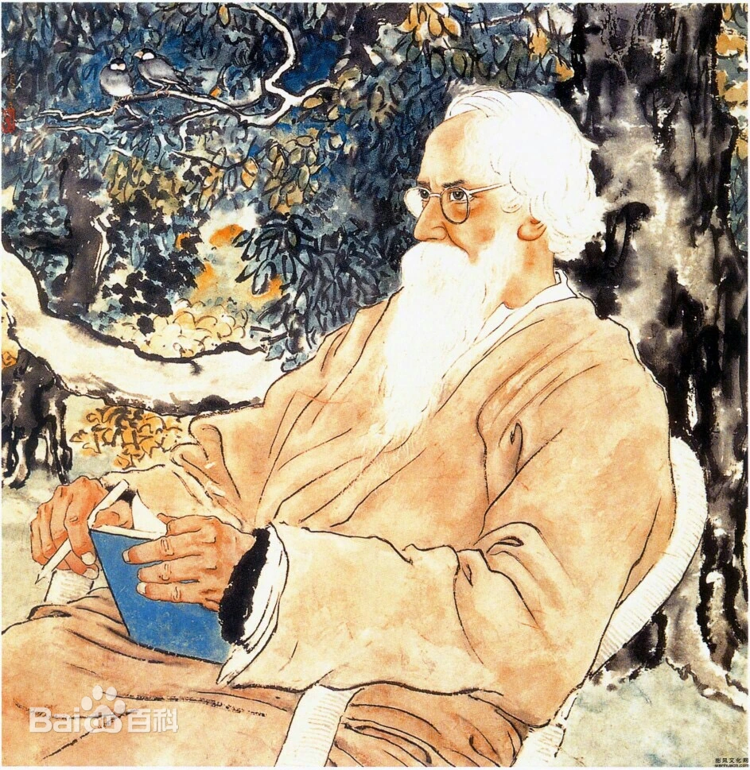
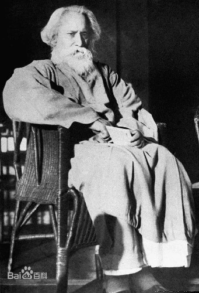
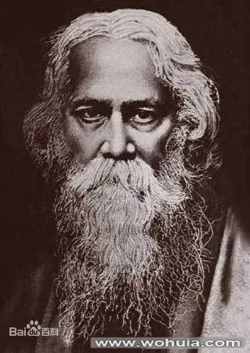
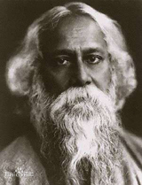
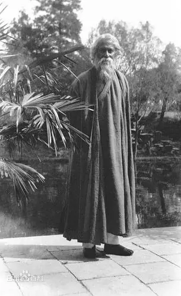

作品影响
泰戈尔是印度近代著名作家、诗人、哲学家，其文学作品跨越了诗歌、小说、戏剧和散文等多个领域，且均获得杰出成就。他的诗歌语言优美，意象丰富，常常表现出对自然、人生和人类情感的深刻思考。他的代表作《吉檀迦利》是一部由诗歌组成的集子，表达了他对神的崇敬和对人类命运的思考。这部作品不仅在印度引起了广泛关注，也在国际上产生了深远的影响。1913年，泰戈尔因该作品获得诺贝尔文学奖，成为第一位获得此奖项的非欧洲作家。
泰戈尔的诗歌具有浓厚的哲学色彩，他常常通过细腻的情感描写和丰富的自然意象，探讨人与自然、人与人之间的关系。他的诗作如《我愿意》、《飞鸟集》等，均展现了他对生命的热爱和对人类情感的深刻理解。在小说和戏剧方面，泰戈尔同样具有重要的文学价值。他的小说《家庭之树》探讨了传统与现代之间的冲突，反映了当时印度社会的变革。他的戏剧作品如《王子与乞丐》和《情感的流浪者》则表现了他对人性、爱情和社会问题的深刻洞察。这些作品不仅在文学上取得了成功，也为印度的戏剧发展做出了贡献。

哲学思想影响
泰戈尔的哲学思想深受印度教、佛教和西方哲学的影响。他强调人类的内在精神和自然的和谐，提倡个体的自由与社会的责任。他认为，艺术和文化是人类精神的重要体现，能够促进社会的进步与和谐。他在多部作品中探讨了人与自然、人与社会的关系，提倡通过艺术与文化来实现个人的自由与解放。

社会影响
泰戈尔积极参与印度的社会变革，关注贫困、教育和女性权益等问题，倡导教育的普及和社会的平等。他认为，教育是实现社会进步的关键，只有通过教育，才能改变人们的思想观念和生活状况。他创办了位于西孟加拉的“沙西国际大学”（Visva-Bharati），致力于培养具有国际视野和人文精神的人才。该大学吸引了许多来自世界各地的学生和学者，成为文化交流的重要平台。泰戈尔在教育方面的探索不仅限于传统的课堂教学，他提倡“自然教育”，主张通过与自然的接触来培养学生的感知能力和创造力。他的教育理念影响了许多教育工作者，推动了印度教育改革的进程。

文化交流影响
泰戈尔生活在印度民族主义运动的关键时期，他的思想和作品对印度独立运动产生了深远的影响。他的许多诗歌和文章表达了对殖民统治的不满和对自由的渴望。他与甘地等政治领袖保持密切联系，虽然在某些政治观点上存在分歧，但他对印度独立的追求始终如一。在独立运动中，泰戈尔的作用不仅限于文学创作，他还通过演讲、写作和社会活动，积极倡导民族团结和文化自信。他认为，真正的独立不仅是政治上的解放，更是文化和精神上的觉醒。
泰戈尔的影响不仅限于印度，他的作品在全球范围内广泛传播。他的诗歌被翻译成多种语言，影响了世界各地的文学和艺术。他与许多国际知名的文化名人保持联系，如爱因斯坦、海明威等，推动了东西方文化的交流。泰戈尔与爱因斯坦的信件交流，涉及了许多哲学和科学的问题，展现了他对世界的深刻思考。

名言警句影响
泰戈尔的名言“每个人都是一束光，都能绽放所有美好”，不仅是对个体价值的肯定，更是对人类共同命运的深思。这句话激励着无数人在追求个人价值的同时，关注他人和社会的福祉，努力成为更好的自己，照亮他人的生命。